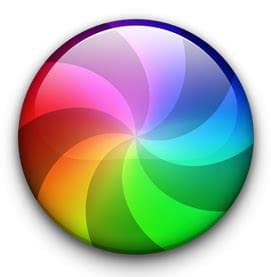

General asynchronous programming concepts
In this article, we'll run through a number of important concepts relating to asynchronous programming, and how this looks in web browsers and JavaScript. You should understand these concepts before working through the other articles in the module.
| Prerequisites: | Basic computer literacy, a reasonable understanding of JavaScript fundamentals. |
|---|---|
| Objective: | To understand the basic concepts behind asynchronous programming, and how they manifest in web browsers and JavaScript. |
Asynchronous?
Normally, a given program's code runs straight along, with only one thing happening at once. If a function relies on the result of another function, it has to wait for the other function to finish and return, and until that happens, the entire program is essentially stopped from the perspective of the user.
Mac users, for example, sometimes experience this as the spinning rainbow-colored cursor (or "beachball" as it is often called). This cursor is how the operating system says "the current program you're using has had to stop and wait for something to finish up, and it's taking so long that I was worried you'd wonder what was going on."

This is a frustrating experience and isn't a good use of computer processing power — especially in an era in which computers have multiple processor cores available. There's no sense sitting there waiting for something when you could let the other task chug along on another processor core and let you know when it's done. This lets you get other work done in the meantime, which is the basis of asynchronous programming. It is up to the programming environment you are using (web browsers, in the case of web development) to provide you with APIs that allow you to run such tasks asynchronously.
Blocking code
Asynchronous techniques are very useful, particularly in web programming. When a web app runs in a browser and it executes an intensive chunk of code without returning control to the browser, the browser can appear to be frozen. This is called blocking; the browser is blocked from continuing to handle user input and perform other tasks until the web app returns control of the processor.
Let's look at a couple of examples that show what we mean by blocking.
In our simple-sync.html example (see it running live), we add a click event listener to a button so that when clicked, it runs a time-consuming operation (calculates 10 million dates then logs the final one to the console) and then adds a paragraph to the DOM:
const btn = document.querySelector('button');
btn.addEventListener('click', () => {
let myDate;
for(let i = 0; i < 10000000; i++) {
let date = new Date();
myDate = date;
}
console.log(myDate);
let pElem = document.createElement('p');
pElem.textContent = 'This is a newly-added paragraph.';
document.body.appendChild(pElem);
});
When running the example, open your JavaScript console then click the button — you'll notice that the paragraph does not appear until after the dates have finished being calculated and the console message has been logged. The code runs in the order it appears in the source, and the later operation doesn't run till the earlier operation has finished running.
Note: The previous example is very unrealistic. You would never calculate 10 million dates on a real web app! It does, however, serve to give you the basic idea.
In our second example, simple-sync-ui-blocking.html (see it live), we simulate something slightly more realistic that you might come across on a real page. We block user interactivity with the rendering of the UI. In this example, we have two buttons:
- A "Fill canvas" button that when clicked fills the available
<canvas>with 1 million blue circles. - A "Click me for alert" button that when clicked shows an alert message.
function expensiveOperation() {
for(let i = 0; i < 1000000; i++) {
ctx.fillStyle = 'rgba(0,0,255, 0.2)';
ctx.beginPath();
ctx.arc(random(0, canvas.width), random(0, canvas.height), 10, degToRad(0), degToRad(360), false);
ctx.fill();
}
}
fillBtn.addEventListener('click', expensiveOperation);
alertBtn.addEventListener('click', () =>
alert('You clicked me!');
);
If you click the first button and then quickly click the second one, you'll see that the alert does not appear until the circles have finished being rendered. The first operation blocks the second one until it has finished running.
Note: OK, in our case, it is ugly and we are faking the blocking effect, but this is a common problem that developers of real apps fight to mitigate all the time.
Why is this? The answer is because JavaScript, generally speaking, is single-threaded. At this point, we need to introduce the concept of threads.
Threads
A thread is basically a single process that a program can use to complete tasks. Each thread can only do a single task at once:
Task A --> Task B --> Task C
Each task will be run sequentially; a task has to complete before the next one can be started.
As we said earlier, many computers now have multiple cores, so can do multiple things at once. Programming languages that can support multiple threads can use multiple cores to complete multiple tasks simultaneously:
Thread 1: Task A --> Task B Thread 2: Task C --> Task D
JavaScript is single-threaded
JavaScript is traditionally single-threaded. Even with multiple cores, you could only get it to run tasks on a single thread, called the main thread. Our example from above is run like this:
Main thread: Render circles to canvas --> Display alert()
After some time, JavaScript gained some tools to help with such problems. Web workers allow you to send some of the JavaScript processing off to a separate thread, called a worker so that you can run multiple JavaScript chunks simultaneously. You'd generally use a worker to run expensive processes off the main thread so that user interaction is not blocked.
Main thread: Task A --> Task C Worker thread: Expensive task B
With this in mind, have a look at simple-sync-worker.html (see it running live), again with your browser's JavaScript console open. This is a rewrite of our previous example that calculates the 10 million dates, but this time we're using a worker for the calculation. You can see the worker's code here: worker.js. Now when you click the button, the browser is able to display the paragraph before the dates have finished calculating. Once the worker has finished calculating, it logs the final date to the console. The first operation no longer blocks the second.
Asynchronous code
Web workers are pretty useful, but they do have their limitations. A major one is they are not able to access the DOM — you can't get a worker to directly do anything to update the UI. We couldn't render our 1 million blue circles inside our worker; it can basically just do the number crunching.
The second problem is that although code run in a worker is not blocking, it is still basically synchronous. This becomes a problem when a function relies on the results of multiple previous processes to function. Consider the following thread diagrams:
Main thread: Task A --> Task B
In this case, let's say Task A is doing something like fetching an image from the server and Task B then does something to the image like applying a filter to it. If you start running Task A and then immediately try to run Task B, you'll get an error, because the image won't be available yet.
Main thread: Task A --> Task B --> |Task D| Worker thread: Task C -----------> | |
In this case, let's say Task D makes use of the results of both Task B and Task C. If we can guarantee that these results will both be available at the same time, then we might be OK, but this is unlikely. If Task D tries to run when one of its inputs is not yet available, it will throw an error.
To fix such problems, browsers allow us to run certain operations asynchronously. Features like Promises allow you to set an operation running (e.g. the fetching of an image from the server), and then wait until the result has returned before running another operation:
Main thread: Task A Task B
Promise: |__async operation__|
Since the operation is happening somewhere else, the main thread is not blocked while the async operation is being processed.
We'll start to look at how we can write asynchronous code in the next article. Exciting stuff, huh? Keep reading!
Conclusion
Modern software design increasingly revolves around using asynchronous programming, to allow programs to do more than one thing at a time. As you use newer and more powerful APIs, you'll find more cases where the only way to do things is asynchronously. It used to be hard to write asynchronous code. It still takes getting used to, but it's gotten a lot easier. In the rest of this module, we'll explore further why asynchronous code matters and how to design code that avoids some of the problems described above.